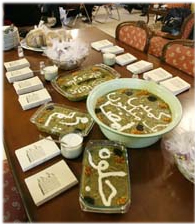

پذيرش > سایت نوشته ها > نقدی بر مقاله " جنجال آش نذری و فمینیست های خطاکار":سنت یا خرافه / مهشید (...)


 نقدی بر مقاله " جنجال آش نذری و فمینیست های خطاکار":سنت یا خرافه / مهشید پگاهی نقدی بر مقاله " جنجال آش نذری و فمینیست های خطاکار":سنت یا خرافه / مهشید پگاهی
17 بهمن 1386 - - نسخه قابل چاپ
بیش از صدسال از آغاز آگاهی زنان ایرانی بر بی حقّی خود و نا برابری فاحش زن و مرد در کشور باستانی ایران می گذرد. تا کنون کوشش های بسیاری برای بالا بردن سطح فرهنگ این اجتماع و رفع تبعیض قانونی از زنان انجا م یافته است. زنان ایران راه درازی را پیموده و به درجات علمی و هنری والائی دست یافته اند. بیش از ٦٠ در صد دانشجویان سال ١٣٨٦ خورشیدی را دختران تشکیل می دهند. امّا حقوق مدنی زنان تغییر چندانی نکرده است. زنان ایرانی از ابتدائی ترین حقّ انسانی خویش ما نند حقّ ا زدواج ، حقّ طلاق ، حقّ ولایت و حتّی حضانت فرزندان ، حقّ سفر و حقّ اشتغال بدون اجازۀ همسر گرفته تا حقّ انتخاب پوشش خود بی بهره اند. در عوض، هنگا م مجازات شدن شدیدتر و سریع تر از مردان سنگینی قانون را بر دوش می کشند. دختر هشت ساله و نه ماهه از نظر قانونی بالغ بوده می تواند برا ی هر جرمی به اشّد مجازات محکوم گردد. در مورد پسران ، بلوغ قانونی چهارده سال و هفت ماه است(که هر دو از نظر روانشناسی و جامعه شناسی غیر قا بل تصّور و قبول اند).
در حالی که مردان ایرانی می توانند بدون ترس از مجازات قانونی، با عنوان مشکوک بودن به همسر خویش، وی را حتّی به قتل برسانند، زنان را به همان جرم بلافاصله اعد ام میکنند. نمونه آن راحله، زن جوانی که از خشونتهای فیزیکی و روانی همسر معتادش که حتی معشوقه اش را نیز به خانه میآورده به ستوه آ مده بود و در حین نزاع و در حالت خشم شوهرش را به قتل رسانیده بود، در روز ١٢ دی ماه ١٣٨٦ اعدام شد.
در چنین شرایطی، کمپین یک میلیون امضأ با خواست لغو قوانین تبعیض آمیز جنسیّتی آغاز به کار کرده است. فعّالیتی که روی جنبۀ آ گاهی دهندۀ آن تکیه می شود. و چنین است که ما به عنوان " شبکۀ همبستگی بین المللی با مبارزات زنان ایران "، با حفظ استقلال نظری خود به حما یت از این جنبش برخاسته و برآنیم که صد ای آ زادی خواهانه و برابری طلبانۀ زنان ایران را به گوش جهانیان برسانیم.
حفظ استقلال نظری، انگیزۀ من برای نقد مقالۀ ٩ صفحه ای نوشین احمدی خراسانی با عنوان "جنجال آش نذری و فمینیستهای خطاکار" می باشد. ایشان پس از اظهار تعّجب از واکنشهای " عجیب وغریب و نامنتظره" در مقابل مراسمی به " سادگی ومعمولی آش نذری"، این مراسم را "زنانه" و در رد یف مراسم "مردانۀ" برگزاری مجلس تحریم در مسجد شمرده و یا آ نرا هم طراز با سنّت های کهن و با ستانی پریدن از روی آتش چهارشنبه سوری و یا چیدن سفرۀ هفت سین دا نسته اند. نوشین عزیز، نذر کردن به معنی داد و ستد با خد است. انگیزۀ این کار نیکوکاری نیست. توزیع غذا میان مستمندان هنگامی خیرخواهانه است که بدون چشم داشت و رایگان صورت گیرد. نذر کردن نه زنانه است و نه برآمده از دل آئین، نه با مرا سم یادبود و احترام به رفتگان در مسجد و آرامگاه و یا حتی نه با مراسم سنّتی چها رشنبه سوری و عید نوروز قابل مقایسه است. نذر کردن باوریست خرافی که در نهایت با جادو و جنبل و انتظار معجزه دا شتن قابل قیاس است. در اینکه با ورهائی از این دست در تمام جوامع به نسبت فرهنگشان کم و بیش وجود داشته و دارد و در میهن ما نیز در اقشار مختلف نهادینه شده است شکّی نیست. ولی آ نگا ه که عکس فمینیست های سکولار در حال هم زدن آش نذری منتشر می شود، ضربه به جنبش آ گاهی دهند ۀ زنان میزند، و آنرا تا حدّ جنبشی تقدیرگرا تنزّل می دهد. ا ینکه گزارش آش نذ ری توسّط اعضای کمپین به رسانه ها راه یافته ، بر عکس تصوّر شما، اخلاق گرائی جنبش را بر جسته نمی کند، بلکه زاویه ای هرچند تنگ و باریک از خرافه پرستی آن را بروز می دهد. ا خلاق ربطی به خرافات ندارد و در انتظار معجزه بودن نمایانگر عجز است.
وظیفۀ یک جنبش پیشرو که برای رفع تبعیض جنسیّتی می کوشد اشاعۀ آگاهی است و نه دنباله روی از ناآگاهی. بساط نذر و نیاز را گسترش دادن و نیکی را به قصد پاداش انجام دادن چیزی جز دامن زدن به خرافات و دنباله روی از ناآگاهی در جامعه نیست. خرافاتی که در طیّ قرون به د لیل ناآگاهی و بی سوادی برخی از گروه ها و اقشار یک اجتماع و بخصوص در میان زنان آن بصورت اعتقادات مذهبی در آمده اند، پشتیبانی از چنین رسوماتی که با مذهب اشتباه گرفته شده ودرماندگی وبی ارادگی را دامن میزنند، عقب گردی است در جنبش زنان ایران.
نوشین عزیز، چگونه است که شمائی که از دو قطبی شدن تصویر زن ایرانی و ندیده گرفتن اعتدال آن در وضعیّت کنونی جهان شکایت کرده اید، ( بدون اینکه موافق دیدگاهتان باشم ) خود تصویری کلیشه ای و کاملأ مخدوش از زنانی که دهه های ٥٠ و ٦٠ خورشیدی در ایران زندگی کرده اند را ارائه داده و هویت مدرن آنها را مترادف با طرد و نفی و تحقیر هر آنچه "زنانه" است دانسته اید؟ ( البته که اقلیتی اینچنین بوده اند ولی آیا به نظر شما چندگانگی بودن فقط مربوط به نسل شما میباشد و در بین زنان نسل قبلی چندگانگی موجود نبوده است؟)
متأسّفم که پندار شما از نسلهای قبلی تان چنان دور از واقعیّت وتک بعدی است که منجر به نگارش انتقادی کاملأ کلیشه ای و شعاری گشته است. برای بسیاری از زنان فعّال در جنبش فمینیستی، دامن زدن به خرافات از هر نوع آن به هیچ وجه زنانه نیست بلکه ناآگاهانه میبا شد. این در حالیست که ما نه با هنر آشپزی مخالفیم و نه از پختن آش رشته ابائی داریم ، نه با پوشیدن لباسهای زیبا و آرایش چهره مخالفتی داریم و نه از بچّه داری و ملاطفت و عشق ورزی و کنشهای مادرانه و زنانه بی بهره ایم.
بسیاری ا ز ما جنبۀ آگاهی دهندۀ جنبش یک میلیون امضاء را جدّی گرفته و از آن حمایت میکنیم و عقیده داریم که طرد خرافات معامله با خدا و ائمۀ اطهار و جادو و جنبل نیز جزئی از این آگاهی باید باشد. حتّی زنان مبا رز صدر مشروطه نیز در کنار کوشش برا ی کشف حجاب، کمرهمّت به مبارزه با خرافات بسته و در زمانی که اکثریّت ایرانیان تحت تأثیر تعصّبات شدید حتّی از درس خواندن د ختران خود جلوگیری میکردند، شجاعانه برای آ گاهی دادن به زنان فعّالیت مینمودند. از جمله یک زن روشنفکر در روزنامۀ حبل المتین از"تربیت بنات" میگوید: " از جملۀ جها ت کلیّۀ اختلالا ت ما که خیلی سعی و کوشش در رفع و ا زالۀ آن لازم است، عد م تربیت نسوان ا ست. عموم زنان حتماًً با ید این چند چیزی را که اصول معیشت مبنی بر آن است بدانند : اولاً سواد و فایدۀ آن.... د ویم اطّلاع جزئی از درجات اولّیۀ طبّ بقدری که بتوان به آن عمل به حفظ الصحّه نمود. سیّم داشتن مختصر صنعتی که بیکاری او را مجبور به بعض ارتکابات جاهلانه ننماید." ... سپس نویسندۀ مقاله زنانی را که از سر نادانی رو به خرافات آ ورده اند سرزنش میکند"(١).
نوشین عزیز، من کاملآ با شما موافقم که نگرش و با ور تقدیرگرایانه و نگاه قضا و قدری فقط مختصّ آنهائی که به آش نذری و امثالهم عقیده دارند نیست و طیف وسیعی از افراد جامعه را دربرگرفته است. ا فرادی که تقدیرگرایانه از هرگونه فعّالیت برای تغییر وضعیّت خویش ا متناع می ورزند. چا ره اما مبا رزه با مجموعۀ این نوع تفکّر و اینگونه انفعال و بی ارادگی است و نه دامن زدن به بخشی از آن. درمان این درد روشنگری است و اینکه افراد جامعه درک کنند که عاجزانه دست بکار نذر و نیاز گذاشتن بیراهه است و دگرگونی سرنوشت شان بستگی به اراده و کوشش خودشان دارد.
چنین نقدهایی خشونت به مدرنیسم بقول شما لرزان خودتان نیست و از ورای هر ایدئولوژی ای، پایه های انتخاب و شعور مستقل را محکم میکند. و اتفاقاً به نظر من مفهوم این شعر فروغ و گشتن او بدنبال "کسی که مثل هیچ کس نیست" نیز همین است دوست عزیز، واگرنه در آن زمان هم کم نبودند که در پی پختن آش نذری بودند.
مهشید پگاهی ٢٠٠٨/ ٠٢/٠٥
(١) زنا ن ا یرا ن در مشروطه، عبدالحسین ناهید
منبع : شبکه بين المللي همبستگي با مبارزات زنان ايران
ارسال به
بالاترین
،
توییتر
،
فریندفید
،
فیسبوک
در همين بخش :
 یک خبر تلخ؟ یک قانونشکنی؟ یک تصمیم بخشنامهای جدید؟ یک خبر تلخ؟ یک قانونشکنی؟ یک تصمیم بخشنامهای جدید؟
چرا بایست به سکسوالیته پرداخت؟ / نفیسه آزاد
آزارجنسی خانگی؛ «قربانی» نه، «نجات یافته»
زنان، بزرگترین بازندگان بهار عرب
سانسور از دیدگاه جنسیتی/الهه امانی
ديگر بخش ها :
طرح یک میلیون امضا
|
مقالات
|
سایت نوشته ها
|
اخبار
|
گزارش كمپين
|
گفت و گو
|
علیه سکوت
|
كوچه به كوچه
|
نامه های شما
|
گزارش ویژه
|
گفتگو با اعضا
|
ویژه سالگرد کمپین
|
تصویر برابری
|
دل آرام علی
|
تریبون
|
مقالات
|
تاریخ شفاهی
|
خارج از چارچوب
|
کتابخانه
|
درباره کمپین
|
کمپین در شهرها
|
کمپین در بند
|
صدای تغییر
|
ویژه 22 خرداد
|
لایحه حمایت از خانواده
|
گالری
|
عشا مومنی
|
امیر یعقوبعلی
|
خدیجه مقدم
|
راحله عسگری زاده و نسیم خسروی
|
پروین اردلان،جلوه جواهری، مریم حسین خواه، ناهید کشاورز
|
زینب پیغمبرزاده
|
سعیده امین، سارا ایمانیان، محبوبه حسین زاده، ناهید کشاورز و همایون نامی
|
احترام شادفر
|
نسیم سرابندی زاده،فاطمه دهدشتی
|
وبلاگ مهمان
|
پرونده خرم آباد
|
دستگیری ها
|
مریم مالک
|
پرستو اللهیاری
|
مهرنوش اعتمادی
|
سمیه رشیدی
|
Other Languages
|
همراهان
|
«فراخوان کمپین ده روز با بهاره هدایت»
| English
|